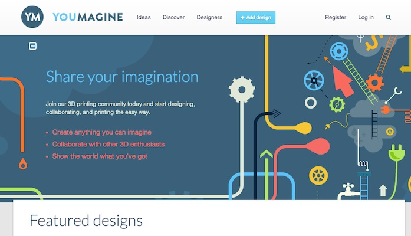

Open Project Management
30 January 2014
1. Media ecosystem
2. Platforms
3. Money and economy
4. Business Models for Open Projects
5. Business Model (Canvas)
1. Media ecosystem
Wired

Source: http://wired.com/
DIYDrones from Chris Anderson (Wired)

Source: http://diydrones.com/
DIYDrones from Chris Anderson (Wired)
DIYDrones: a real factory
Source: http://diydrones.com/profiles/blogs/tour-of-the-new-3d-robotics-factory
"Makers" from Chris Anderson (Wired)

Source: Anderson, Chris. Makers: The New Industrial Revolution. Crown Business, 2012.
O'Reilly Media

Source: http://oreilly.com/
Make Magazine

Source: http://makezine.com//
Make Magazine
Source: http://makezine.com/
Maker Media

Source: http://makermedia.com/
Make: Blog

Source: http://makezine.com/blog/
Make: Store

Source: http://www.makershed.com/
Make: Faires

Source: http://makerfaire.com/map/
Make: Faires. Next edition in Europe

Source: http://www.makerfairerome.eu/news/torna-maker-faire-romedal-28-settembre-al-5-ottobre-2014/
Make: TV

Source: http://archive.makezine.com/tv/
Make: Controller Kit

Source: http://makezine.com/2009/09/10/review-make-controller-kit-v2/
Make: Craft:

Source: http://makezine.com/craftzine/
Makerbot: TV

Source: http://blip.tv/makerbot
Makerbot: Thingiverse

Ultimaker: YouMagine
Source: https://www.youmagine.com/
2. Platforms
Simon "The age of the platform"
Source: Source: Simon, Phil. The Age of the Platform: How Amazon, Apple, Facebook, and Google Have Redefined Business. Motion Publishing, 2011.
A platform
= an extremely valuable and powerful ecosystem that quickly and easily scales, morphs, and incorporates new features (called planks), users, customers, vendors, and partners.
The most vibrant platforms embrace third-party collaboration. The companies behind these platforms seek to foster symbiotic and mutually benefcial relationships with users, customers, partners, vendors, developers, and the community at large. At their core, platforms today are primarily about consumer utility and communications.
Source: Simon, Phil. The Age of the Platform: How Amazon, Apple, Facebook, and Google Have Redefined Business. Motion Publishing, 2011.
A platform

Source: Source: Simon, Phil. The Age of the Platform: How Amazon, Apple, Facebook, and Google Have Redefined Business. Motion Publishing, 2011.
Etsy: A DIY/Craft marketplace
Source: https://www.etsy.com/
Etsy: A platform for DIY
Etsy: A platform for DIY
Blomming: Another platform for DIY
Source: http://www.blomming.com/
Ponoko: A Fabbing platform

Source: http://www.ponoko.com/
Ponoko: A distributed platform

Ponoko: A platform with API

Shapeways: A 3D Printing Platform
Source: http://www.shapeways.com/
Shapeways: A 3D Printing Platform

Shapeways: A 3D Printing Platform
Source: http://www.shapeways.com/blog/archives/1442-Funding-the-Rise-of-Creative-Commerce.html
Shapeways: A 3D Printing Platform
Source: http://www.youtube.com/watch?feature=player_embedded&v=qJuTM0Y7U1k
i.materialise: A 3D Printing Platform
Source: http://i.materialise.com/
Sculpteo: A 3D Printing Platform

Source: http://www.sculpteo.com/en/
Inventables: a store, not a Platform

Source: https://www.inventables.com/
Adafruit: a store, not a Platform
Source: http://adafruit.com/
Adafruit: TV

Adafruit: Video Interview
Sparkfun: a store, not a Platform
Source: https://www.sparkfun.com/
Sparkfun: TV
Sparkfun: How they create value
Physical Platforms: Arduino

Source: http://arduino.cc/
Physical Platforms: Arduino
Physical Platforms: Arduino: Spark Core
Source: https://www.spark.io/
Physical Platforms: Raspberry Pi
Physical Platforms: Micro Python

Source: https://www.kickstarter.com/projects/214379695/micro-python-python-for-microcontrollers
Funding Platforms: Kickstarter

Source: https://www.kickstarter.com/
Kickstarter: Projects 2009-11

Source: https://www.kickstarter.com/blog/happy-birthday-kickstarter
Kickstarter: Success 2009-11
Source: https://www.kickstarter.com/blog/happy-birthday-kickstarter
Kickstarter: Kind of projects 2009-11
Source: https://www.kickstarter.com/blog/happy-birthday-kickstarter
Kickstarter: some sort of API

Source: http://syntaxi.net/2013/03/24/let-s-explore-kickstarter-s-api/
KickTraq: built with some sort of API

Source: http://www.kicktraq.com/projects/sparkdevices/spark-core-wi-fi-for-everything-arduino-compatible/
Kickstarter: rather a medium?
Source: http://www.fastcompany.com/1843007/kickstarter-crowdfunding-platform-or-reality-show
Kickstarter: lessons learned #01
- Design for Simplicity: reduce the functionalities / components
- Design for scale: identify your possible supply chain and plan how to scale the production
- Treat it like a job: it requires full time energy, and probably also a team work
- Befriend fellow hackers: develop the project in hackerspaces or fablabs
- Leverage your backers: use them not just for collecting money!
Source: http://www.wired.com/design/2012/08/how-kickstarter-project-hexy-got-made/
Kickstarter: lessons learned #02
- Set a spot-on funding goal — not too big, not too small: set your Kickstarter goal near $10,000: 38% of projects met their goals
- Don’t take too long to raise your money: The average Kickstarter campaign lasts for 30 days, with 35% of success
- Produce a slick video to get attention:The nearly foolproof way to raise money on Kickstarter is to get the attention of the crowdfunding site’s staff (89% success)
- Make at least 1,000 Facebook friends: Founders with 1,000 Facebook friends or more can have a success up to 40%
Funding Platforms: Indiegogo
Source: http://www.indiegogo.com/
Funding Platforms for Open Projects: Goteo

Source: http://goteo.org/?lang=en
Funding Platforms for Open Projects: Goteo

Source: https://github.com/Goteo/Goteo
Funding Platforms for Local Projects: SmallKnot

Source: http://www.smallknot.com/
Funding Platforms for Local Projects: Brickstarter

Platforms for coding: Sourceforge, for the organization

Source: http://sourceforge.net/
Platforms for coding: GitHub, for social network

Source: https://github.com/
Platforms for coding: GitHub, for social network

Source: http://developer.github.com/v3/
Platforms for coding: Bitbucket (like GitHub)
Source: http://bitbucket.org/
Platforms for coding: Bitbucket (like GitHub)
Platforms for coding: GitTip for GitHub,Bitbucket,Twitter
Source: https://www.gittip.com/
Platforms for hardware: Upverter
Source: https://upverter.com/
Platforms for hardware: 123D Circuits
Source: http://www.123dapp.com/circuits
3. Money and economy
And designers can be entrepreneurs

Source: http://www.kickstarter.com/projects/danprovost/glif-iphone-4-tripod-mount-and-stand
And designers can be entrepreneurs
Source: http://www.kickstarter.com/projects/1104350651/tiktok-lunatik-multi-touch-watch-kits
But "Open" alone is not enough
Source: http://www.kickstarter.com/projects/1104350651/tiktok-lunatik-multi-touch-watch-kits
You have to interact with the market
Source: http://www.threadless.com/
Open Hardware: a rising market
Source: http://makezine.com/2010/05/06/million-dollar-baby-businesses-de/
A rising market: Sparkfun
“In 2010, SparkFun had revenues of about $18.4MM. As of April of 2011, we have around 120 employees, up from 87 a year ago.”
“We hope to grow by 50% this year (2011) to around $28MM in sales. We expect to be in the 30-50MM range in the next 3-5.”
Source: http://www.sparkfun.com/news/599
A long tail of users / projects...
Anderson: "The Long Tail"
Source: Anderson, Chris. Long Tail, The, Revised and Updated Edition: Why the Future of Business Is Selling Less of More. Rev Upd. Hyperion, 2008.
Anderson: "Free"
Source: Anderson, Chris. Long Tail, The, Revised and Updated Edition: Why the Future of Business Is Selling Less of More. Rev Upd. Hyperion, 2008.
Etsy: a long tail of users/projects

Source: https://www.etsy.com/press/kit/
Makers can create a startup: Makerbot
Source: http://www.makerbot.com/
The market of 3D printing
The market for 3D printing in 2012, consisting of all products and services worldwide, grew 28.6% (CAGR) to $2.204 billion. This is up from $1.714 billion in 2011, when it grew 29.4%. Growth was 24.1% in 2010. The average annual growth (CAGR) of the industry over the past 25 years is an impressive 25.4%. The CAGR is 27.4% over the past three years (2010–2012)
Makerbot: 10 million
Source: http://techcrunch.com/2011/08/23/makerbot-takes-10-million-in-funding-from-foundry-group-angels/
Shapeways: 30 million
Makerbot + Stratasys: 604 million
Big corporations: 3D Systems
Source: http://www.3dsystems.com/
3D Systems: not just machines
Source: http://investor.3dsystems.com/
A typical closed system
Source: http://en.wikipedia.org/wiki/Timeline_of_Microsoft_Windows
A typical open system
Source: http://futurist.se/gldt/
Open - Closed Innovation
Open Source vs. Open Innovation
“Open innovation is sometimes confated with open source methodologies for software development. There are some concepts that are shared between the two, such as the idea of greater external sources of information to create value. However, open innovation explicitly incorporates the business model as the source of both value creation and value capture. This latter role of the business model enables the organization to sustain its position in the industry value chain over time. While open source shares the focus on value creation throughout an industry value chain, its proponents usually deny or downplay the importance of value capture.”
Source: Chesbrough, H. (2011). Open Services Innovation: Rethinking Your Business to Grow and Compete in a New Era (1st ed.). Jossey-Bass.
Look for what is becoming a commodity #01
A commodity is a good for which there is demand, but which is supplied without qualitative differentiation across a market. [...] the market treats it as equivalent or nearly so no matter who produces it.
Look for what is becoming a commodity #02
Commoditization (also called commodifcation) occurs as a goods or services market loses differentiation across its supply base, often by the diffusion of the intellectual capital necessary to acquire or produce it effciently. […] a unique, branded product into a market based on undifferentiated products.
Hardware and software, becoming commodities #01
('50s-'70s) Hardware is the product, software is for free: mainframes
--> Hacker ethic of sharing information
Hardware and software, becoming commodities #02
('80s-'90s) Hardware is commodity, software is the product and it's proprietary: personal computers
--> Proprietary software emerges with Microsoft
Hardware and software, becoming commodities #03
('00s-...) Even software is a commodity, so let's sell services and get data from users: open source, web 2.0, services around software, software as service, the cloud
--> Web 2.0 emerges
Manufacturing and Design, becoming commodities #01
('90s-'00s) Manufacturing becomes a commodity and slowly disappears in the West (thanks to China)
Manufacturing and Design, becoming commodities #02
('10s-'...s) Now it's even more a commodity (thanks to Fabbing)
Manufacturing and Design, becoming commodities #03
('00s-'...s) Professional design is slowly becoming a commodity (thanks to Fast Fashion, Ikea, design schools bubble, Shanzai)
Manufacturing and Design, becoming commodities #04
Where is value now, in Design and Manufacturing?
Fabbing + designers = $$$ + Open Design
Source: http://www.freedomofcreation.com/home/3d-systems-acquires-freedom-of-creation
3D Systems + Freedom of Creation: Cubify
3D Systems + Freedom of Creation: Cubify
But even makers may be giving content away...
And users innovate... a lot!
Source: Hippel, Eric A. Von, Jeroen De Jong, and Steven Flowers. “Comparing Business and Household Sector Innovation in Consumer Products: Findings from a Representative Study in the UK.” SSRN eLibrary (September 27, 2010). http://papers.ssrn.com/sol3/papers.cfm?abstract_id=1683503.
4. Business Models for Open Projects
Thank you!
Massimo Menichinelli / info@openp2pdesign.org / @openp2pdesign

This work is licensed under a Creative Commons Attribution 3.0 Unported License.
Massimo Menichinelli - 2013
openp2pdesign.org